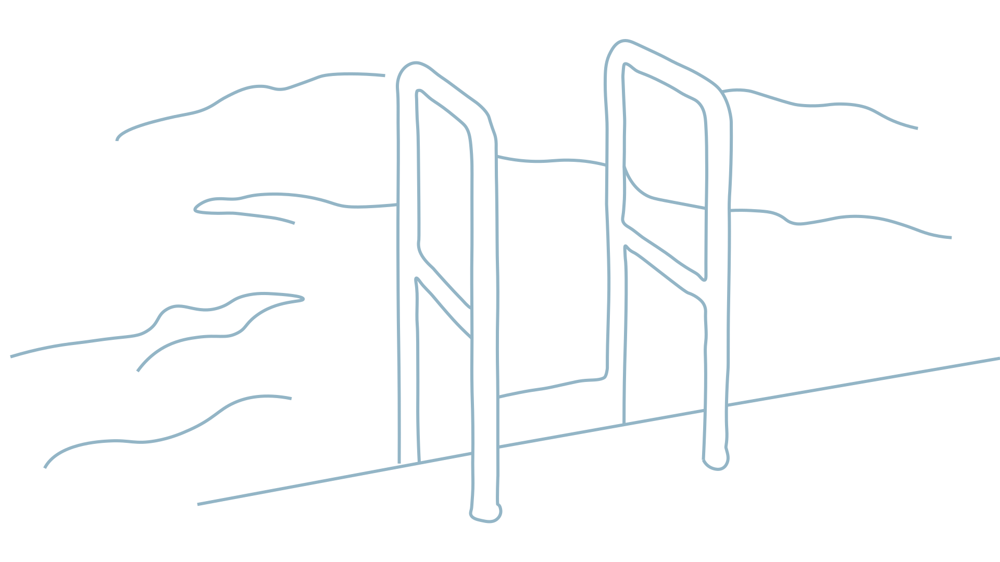

OM MIG
Sofie Jacobsen
Hej! Jeg hedder Sofie Jacobsen og jeg er 25 år gammel.
Jeg er fra Fyn, men har boet på Frederiksberg siden 2020.
Jeg dimitterede fra Gymnasiet i 2018 og har efterfølgende haft forskellige fuldtidsjobs, oftest i en
lederposition.
Jeg arbejdede i et par år som manager i salatbaren Wedo hvor jeg ofte samarbejde med vores
SoMe-manager, hvor jeg fik muligheden for at være med til at tage billeder, sætte billeder op og
endda også stå model til dem!
Vi fik sammen muligheden for at tegne juledekorationer til et par Original Coffee-cafeer. Her endte
jeg med at blive tilbudt at tage et par ekstra butikker selv, hvilket var en kæmpe ære og jeg var
mega stolt over at få muligheden for at arbejde og blive betalt for at skabe noget kreativt.

Jeg har altid været typen der aldrig kunne kigge på et hvidt papir uden at tegne på det.
Et powerpoint var altid meget sjovere at lave end selve opgaven og jeg har i løbet af årene fået mig
en helt god samling af blyanter, tuscher, fancy tegnepapir og maling.
Det har vist altid ligget i kortene at jeg skulle tage en kreativ uddannelse, og jeg er allerede så
glad for at have startet på multimediedesign-uddannelsen på KEA. Jeg glæder mig til at lære så meget
som muligt, dele ideer og
tanker og skabe et inspirerende portfolio!